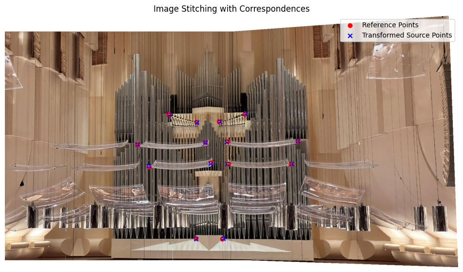
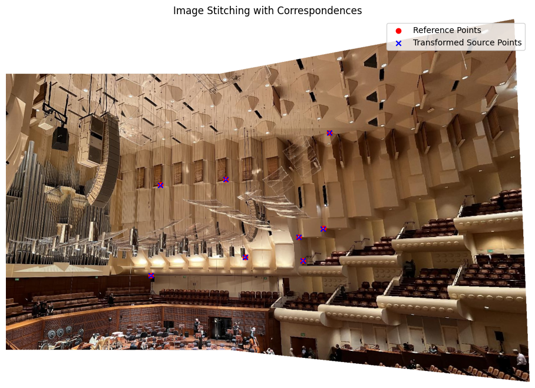
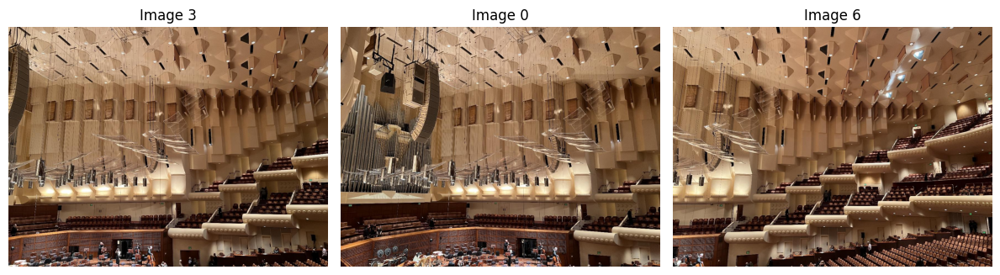

CS180 Project 4: Auto Stitching Photo Mosaics
Author: Ziqian Luo
Table of Contents
- Recover Homographies
- Image Rectification
- Blend the Images into a Mosaic
- Detect Corners using Harris
- Adaptive Non-Maximal Suppression
- Feature Descriptor Extraction
- Feature Matching using NNs and Lowe's Ratio Test
- RANSAC for Robust Feature Matching
- Results
- Bell & Whistles: Multiscale Features
- Bell & Whistles: Rotation-Invariant Features
- Bell & Whistles: Auto Matching
- Reflection
Recover Homographies
To align the images correctly, I computed the homography matrix H that transforms the coordinates from one image to another. The homography relates two images with the equation q = H p, where q and p are points in homogeneous coordinates. I used at least four point correspondences to estimate H, and I solved for the matrix using Singular Value Decomposition (SVD) to ensure numerical stability and accuracy. Below is an example of how the homography matrix is defined and used:
Let the homography matrix be \[ H = \begin{bmatrix} h_1 & h_2 & h_3 \\ h_4 & h_5 & h_6 \\ h_7 & h_8 & 1 \end{bmatrix} \]
Given a point \((x, y)\) in the source image and its corresponding point \((x', y')\) in the reference image, we can write the homography equation as \[ \begin{bmatrix} x' \\ y' \\ w \end{bmatrix} = \begin{bmatrix} h_1 & h_2 & h_3 \\ h_4 & h_5 & h_6 \\ h_7 & h_8 & 1 \end{bmatrix} \begin{bmatrix} x \\ y \\ 1 \end{bmatrix} \]
Given at least four point correspondences, we can write the above equation for each pair of points. Let \[ A = \begin{bmatrix} x_1 & y_1 & 1 & 0 & 0 & 0 & -x'_1 x_1 & -x'_1 y_1 \\ 0 & 0 & 0 & x_1 & y_1 & 1 & -y'_1 x_1 & -y'_1 y_1 \\ x_2 & y_2 & 1 & 0 & 0 & 0 & -x'_2 x_2 & -x'_2 y_2 \\ 0 & 0 & 0 & x_2 & y_2 & 1 & -y'_2 x_2 & -y'_2 y_2 \\ & & & & \vdots \end{bmatrix} \]
We can see that \[ A\begin{bmatrix} h_1 \\ h_2 \\ h_3 \\ h_4 \\ h_5 \\ h_6 \\ h_7 \\ h_8 \end{bmatrix} = \begin{bmatrix} x'_1 \\ y'_1 \\ x'_2 \\ y'_2 \\ \vdots \end{bmatrix} \] To get \(H\), we can apply SVD on \(A\). The elements of the last column of \(V\) will be the elements of \(H\) since it corresponds to the smallest singular value.
Image Rectification
This process involved taking an image of a rectangular object and warping it such that the object appears perfectly rectangular in the final output. I used the computed homography from source points to reference points (I manually defined the reference points) to align the object correctly. I applied inverse warping along with interpolation to accurately map the pixels to their new locations. Additionally, I added an alpha channel to cover any unwanted parts of the image. Below is the original image and the rectified result:


Blend the Images into a Mosaic
Here are the steps to blend two images seamlessly:
- Compute Homography Matrix:
- Uses corresponding points (
src_ptsandref_pts) to calculate the homography matrixH.
- Uses corresponding points (
- Determine Output Image Size:
- Transforms the source image corners and combines them with reference image corners to calculate dimensions and translation.
- Compute Translation Matrix:
- Generates a translation matrix
Tand determines the output image's height, width, and offsets.
- Generates a translation matrix
- Apply Translation to Homography:
- Multiplies the translation matrix
TwithHto getH_translated.
- Multiplies the translation matrix
- Warp Source Image:
- Applies
H_translatedto align the source image with the reference image.
- Applies
- Create Canvas for Reference Image:
- Warps the reference image using
Tto fit onto the canvas.
- Warps the reference image using
- Extract Alpha Channels:
- Retrieves the alpha channels from both the canvas and warped source image.
- Compute Distance Transforms:
- Calculates the Euclidean distance transform for the alpha channels of both images, where each pixel's value represents the distance to the nearest edge of the image region.
- Create Blending Mask with Two-Band Blending:
- Uses a low-pass filter (Gaussian blur) to separate smooth regions and a high-pass filter to retain details.
- For the high-pass blend, uses the maximum distance transform value between the two images to select the sharper details.
- For the low-pass blend, combines the images using a weighted ratio of the distance transforms to smoothly blend overlapping areas.
- Create and Add Alpha Channel to Blended Image:
- Constructs an alpha channel for the final blended image by combining non-zero regions from both images and adds it to the RGB blended result.
Below is an example of the original images and the final mosaic:


Here are the distance transforms, low-pass blended, and high-pass blended images for the second mosaic.


The images turned out fairly well with multiresolution blending.
Harris Corner Detection
I used sample code for Harris Corner Detection and, by adjusting the parameters, identified key corners in the image.
Adaptive Non-Maximal Suppression (ANMS)
I implemented the Adaptive Non-Maximal Suppression (ANMS) algorithm to refine the detected corners by reducing their number. This algorithm sorts corners based on response values and iteratively removes those that are too close. The distance threshold is determined by the smallest distance to the nearest corner with a higher response value. Below is the result of applying ANMS to the Harris-detected corners:
Feature Descriptor Extraction
Feature descriptors were obtained by extracting 40x40 patches around each corner, downsampling them to 8x8, and normalizing them to zero mean. Prior to extraction, the image was blurred to minimize noise.
Feature Matching with NN and Lowe's Ratio Test
To match feature descriptors, I computed the 1-NN and 2-NN for each feature patch, representing them as 64-dimensional vectors and using Euclidean distance with a KD tree. Matching is established using Lowe's Ratio Test, where the distance to the 1-NN is divided by the distance to the 2-NN and considered valid if the ratio is below a specified threshold. Matches can be further refined by discarding those where the distance to the second nearest neighbor is below the average outlier distance, as suggested in the referenced paper.
RANSAC for Robust Feature Matching
I applied the RANSAC algorithm, as covered in class, to filter out mismatches and identify the best homography matrix. This involves randomly selecting four matches to compute the homography, then applying it across matches and counting inliers within a specified threshold.

Final Results
Below are the results comparing manual and automated methods:
 Bell & Whistles: Multiscale Feature Extraction
I implemented multiscale feature extraction by applying Gaussian blurring to the image and downsampling it by a factor of two. Features were then extracted from each scale and combined to enhance the final feature descriptors, showing improvements over the single-scale approach.
Bell & Whistles: Rotation-Invariant Features
To make the feature extraction rotation-invariant, I computed the gradient at each corner and aligned the image to extract features that remain stable under rotation.
Bell & Whistles: Automatic Panorama Matching
To create an automated panorama detection process for unordered images, I began by calculating robust correspondences between each image pair using RANSAC. Images with enough correspondences were grouped as part of the same panorama, forming nodes in a graph where each connected component represents a unique panorama. Within each component, I used a maximum spanning tree (MST) to prioritize the strongest connections, reducing redundancy by minimizing the number of image pairs needed to stitch the panorama. To determine the ideal base image, I calculated the betweenness centrality of each node in the MST, selecting the image with the highest centrality as the anchor, thereby minimizing transformation complexity during stitching. This approach builds on techniques from Alec Li's Project 4B writeup.
Reflection
This project provided a valuable learning experience. It strengthened my understanding of image warping, stitching, and feature extraction, while also showing me how useful graph algorithms like maximum spanning trees and centrality can be for organizing and simplifying panorama detection. I learned the importance of stability in homography calculations and saw the benefits of using multiresolution blending along with features that are both scale- and rotation-invariant. Working through the challenges of building and refining these techniques was both demanding and rewarding, and I’m excited to apply them in future projects.